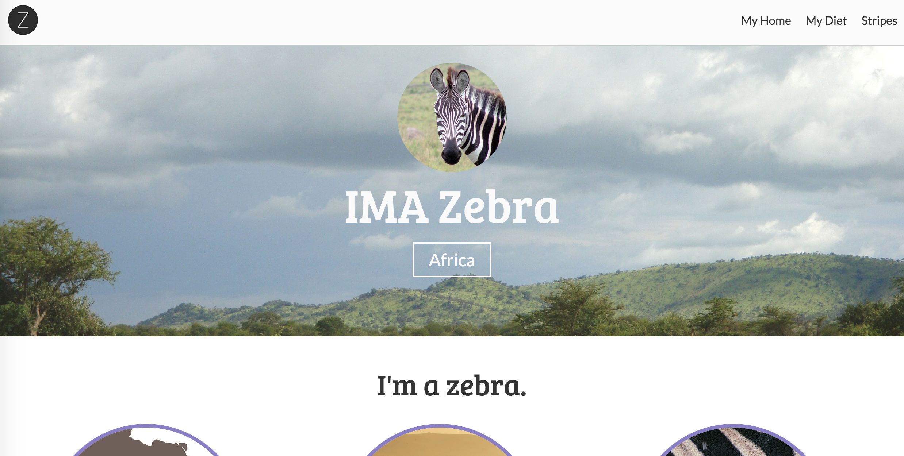

Intermediate HTML/CSS & Intro to Responsive Design
Welcome!
Wifi Info
Network:Simple Energy Guest
Password:domorefaster
Download workshop files
If you have not already downloaded the files for this workshop - please download them at gdiboulder.com/bootstrap
Thanks to our sponsor:

Meet your instructor: Cara Jo Miller
- Co-founder: Girl Develop It Boulder
- Lead Designer: Simple Energy
- E-mail: carajo@girldevelopit.com
- Twitter: @corrinajo
- Lover of all things glitter
What we'll be covering in this class
We'll be jumping in right where the intro class left off.
We will be building a profile site from scratch
Workshop files
Workshop files
- Download
- File structure
- Sample Images
Common Applications
Common Applications
HTML & CSS are awesome, right?
But how do people use them really?
Here's a few things we'll be covering today:
- Horizontal & fixed navigation
- Heros with full bleed background images
- Border-radius on images & elements
- Custom font-faces
- Three column layouts
- Fancy buttons
Standard Practices
Standard Practices
- Reset CSS files
- Standard widths and sizes
- Containers for layout
Reset CSS
Even though HTML is the structure and CSS is the design, some HTML elements have default styles
Different browsers display these things differently. A reset gets rid of these inconsistencies.
Examples include:
- Bulleted lists like this one have standard bullets
- Paragraphs & headings have default padding
- Links are blue and underlined
Reset CSS
margin: 0;
padding: 0;
border: 0;
font-size: 100%;
font: inherit;
vertical-align: baseline;
list-style: none;
Reset CSS
We've done all the hard work for you! Instead of typing this out - we've included this in our example files.
Standard widths and sizes
- Screen sizes vary from computer to computer. Standardize your site on different screen sizes by defining specific widths.
- Wrap your content in containers to control the max width it can span across a screen.
- Keep in mind screen sizes also mean different font size display.
- Retina screens have a higher pixel density and a larger resolution, so fonts appear smaller.
Fixed vs. Fluid Width pages
Fixed
- Fixed websites have a set width for the wrapper, usually 960px to 1024px.
- The elements inside the wrapper have a set width, or percentage of the wrapper width.
- No matter the screensize, the user always sees the same size site.
Fixed vs. Fluid Width pages
Fluid
- Also referred to as a liquid layout.
- Majority of the components, including the wrapper, have percentages for their widths.
- The layout adjusts for the width of the user's screen resolution.
- Sounds like a responsive site right!? More on that later.
Containers
Wrappers are a good way to center content if the screen width is wider than your content.
.container {
width: 100%; /* take up full viewport width */
max-width: 1400px; /* if viewport is larger than 1440px,
don't let it take up 100% */
margin: 0 auto; /* center content in the viewport */
}
- 1. The container will take up 100% of the screen if the width of the viewport is less than 1440px.
- 2. If the viewport is wider than 1440px, it will reach it's max width, and become centered in the viewport.
HTML5
HTML 5: What is it?
Formally, HTML5 is the W3C’s specification for the next version of HTML.
Informally, people use "HTML5" to refer to a whole set of new web standards and abilities:
- HTML5
- CSS3
- JavaScript
Quick History of HTML5
-
2004:"WHAT" Working group formed. (WHATWG)
Members from Apple, Mozilla, & Opera set out to develop HTML5.
-
2008:First verson of HTML5 published
First draft is written, but changes are still coming. HTML5 is continually evolving.
- 2008:Firefox 3 becomes HTML5 compatable.
- Jan. 2010:YouTube now offers HTML5 video player.
Okay, not that quick history of HTML5
- April 2010:Steve jobs trashes Flash & bans it on all Apple devices in favor of HTML5.
- Dec. 2010:Chrome opens HTML5 web store.
- Sept. 2011:34% of top 100 sites use HTML5
- Sept. 2012:WC3 proposes stable release of HTML5 by end of 2014!
What about the browsers?
Percentage of HTML5 Elements supported:
- Chrome 35: 92% supported
- Opera 22: 90% supported
- Firefox 30: 84% supported
- Safari 7: 72% supported
- Internet Explorer 11: 68% supported
So what's so cool about it?
Too much to cover in our time together
But here are some highlights:
Marks some old things obsolete
Examples
- Deprecated items (e.g.
frame, frameset, noframes) - Presentational elements and attributes replaced by CSS (e.g.
font, big, center)
Redefines a few things
Gives some old elements semantic meaning and separates them from presentation (e.g.
b, i, strong, em)
HTML5 Doctype
<!DOCTYPE html>
Minimum information required to ensure that a browser renders using standards mode
Old Doctypes
<!DOCTYPE HTML PUBLIC "-//W3C//DTD HTML 4.01//EN"
"http://www.w3.org/TR/html4/strict.dtd">
<!DOCTYPE html PUBLIC "-//W3C//DTD XHTML 1.0 Strict//EN"
"http://www.w3.org/TR/xhtml1/DTD/xhtml1-strict.dtd">
New Structural Elements
<section>
- Group together thematically related content
- Similar to prior use of the div, but div has no semantic meaning
<header>
- Container for a group of introductory or navigational aids
- Document can have multiple header elements
- E.g. One for the page, one for each section
<nav>
- Contains major navigational information
- Usually a list of links
- Often lives in the header
- E.g. site navigation
<footer>
- Contains information about its containing element
- E.g. who wrote it, copyright, links to related content, etc.
- Document can have multiple footer elements
- E.g. One for the page, one for each section
<aside>
- Tangentially related content
- E.g. sidebar, pull quotes
<article>
- Self-contained related content
- E.g. blog posts, news stories, comments, reviews, forum posts
Let's Develop It
- Use new HTML elements to layout the site
- Refer to the example design for hints.
Horizontal Fixed Nav
All the cool kids are doing it these days
- Horizontal fixed-to-top nav allows users to have access to navigational elements at all times.
- All the rage these days
- Be careful - screen heights vary, and it reduces the amount of content visible on smaller screens.
Fixed Nav: HTML
Let's include it in a header, since we know we'll be grouping related content here.
Fixed Nav: CSS
Remember, using fixed position is like using absolute position, except that it's fixed to the viewport, not the containing element.
We also have to define a width for it, and it's location.
nav {
position: fixed;
top: 0;
left: 0;
background: #fafafa;
border-bottom: 2px solid #ccc;
height: 70px;
width: 100%;
}Fixed Nav: CSS
Because we've fixed the nav to the top of the viewport, we need to bump the content of the
bodydown to be visible to the user.
This should be the same, or more than, the height of the navigation bar.
body {
padding-top: 70px;
}
nav {
position: fixed;
top: 0;
left: 0;
background: #fafafa;
border-bottom: 2px solid #ccc;
height: 70px;
width: 100%;
}Fixed Nav: CSS
Now we need to get those list items next to each other instead of stacked.
Let's float them to the left and add some padding to the links so they have a large clickable area.
body {padding-top: 70px;}
nav {
position: fixed;
top: 0;
left: 0;
background: #fafafa;
border-bottom: 2px solid #ccc;
height: 70px;
width: 100%;
}
nav li {
float: left;
width: auto;
}
nav li a {
padding: 25px 10px;
display: block;
}
Fixed Nav: Adding a brand
We can use an
H1with text replacement to include a brand, or logo, in the corner that will still work if images are turned off, making it accesible to screen readers.
Fixed Nav: Text replacement & H1s
#brand {
text-indent: -9000px;
background: url(../images/brand.png) no-repeat top left;
height: 60px;
width: 60px;
float: left;
margin: 5px;
}
nav ul {
float: right;
width: auto;
} Why Text Replacement?
- If we turn the CSS off for this page - the title will still be visible to the browser.
- If a user is coming to our site with a screen reader - the title of the site will be readable to them
- Search engines ♥ it!
Fixed Nav: Container
Notice how the edge of the nav bumps up against the edge of the browser? Let's fix that by adding a container around it.
Fixed Nav: Container
Let's give the container a fixed width and see what happens.
.container {
width: 1024px;
margin: 0 auto;
}Now whereever we use
.containerit will be 1024px wide and centered.
Develop It!
Let's make some small tweaks to the navigation
- Remove the underlines on the links with
text-decoration - Change the color of the links
- Try adding a background color on hover
Hero Section
What is a Hero?
- Large banner image, prominently placed on a web page, generally in the front and center
- First visual a visitor encounters on the site and its purpose is to present an overview of the site's most important content
- Often consists of image and text, can be static or dynamic
Hero Examples


Hero: HTML
Our Hero
section, should look a little something like this:
<section id="hero">

Cara Jo Miller
Boulder, CO
</section> Hero: CSS
Now is where the fun really happens!
#hero {
background: url(../images/flatirons.png) no-repeat top left;
color: #fafafa;
text-align: center;
}
Hero: CSS
Let's give it a height and some padding too.
#hero {
background: url(../images/flatirons.png) no-repeat top left;
color: #fafafa;
text-align: center;
height: 350px;
padding: 25px 0;
}
Remember our Box Model. Padding adds to the height & width of elements.
So the height of our hero will be 400px
Well, that was unexpected...
Things that are wrong with this hero right now:
- That image of your face is way to big! And it's not even a circle!
- The background image is way too large
- The headline is really tiny
Hero: Profile Image
Let's make the profile image a little smaller.
We'll use CSS Targeting with the descendant selector to style the image.
#hero img {
width: 150px;
}That should do it
Border Magic
Turning squares into circles with magic!
Okay, it's not really magic, it's just a bit of CSS3.
Border-Radius
Simply put, allows you to create rounded corners on boxes.
Designers rejoice!
Border-radius
20px radius on all corners
#hero img {
border-radius: 20px;
}
Border-radius
10px radius on top left & bottom right
40px on top right & bottom left
#hero img {
border-radius: 10px 40px;
}
Border-radius
10px radius on top left
20px radius top right
40px radius bottom right
80px radius bottom left
#hero img {
border-radius: 10px 20px 40px 80px;
}
Border-radius
50% radius on all corners
#hero img {
border-radius: 50%;
}
Vendor Prefixes
Vendor Prefixes
HTML5 and CSS3 are still new!
This is great, but it means that not all browsers treat new CSS3 properties the same
Vendor Prefixes
Flags it as a work-in-progress
When finished, the browser should support the non-prefixed name
Vendor Prefixes
Each browser has their own:
- Chrome: -webkit-
- Firefox: -moz-
- Safari: -webkit-
- Opera: -o-
Using Prefixes
#hero img {
-moz-border-radius: 50%;
-webkit-border-radius: 50%;
-ms-border-radius: 50%;
-o-border-radius: 50%;
border-radius: 50%;
}Order matters! The non-prefixed version should always go last.
NOTE:
While you should always use the vendor prefixes when writing code, today we're just going to use the non-prefixed property.
This is to save time during the code exercises
Back to our Hero!
Background-size
Notice how the image is too large for the section? Let's fix that with a new property called background-size
#hero {
background: url(../images/flatirons.png) no-repeat top left;
color: #fafafa;
text-align: center;
height: 350px;
padding: 25px 0;
background-size: cover;
}
cover scales the image to the largest size such that both its width and its height can fit inside the content area.
Develop It!
Let's make some small tweaks to the Hero
- Move the image down from the top.
- Adjust the font size of the header.
- Add a border to the span
3-column Content Area
Why 3 columns?
Because 2 columns is so 2013
3 Column: HTML
Our code should look something like this:
<section id="main-content">
...
<section class="column">
<img src="images/photographer.jpg">
<h4>The Photographer
<p>I travel to some pretty awesome places...
<a href="photos.html" class="btn">See my photos
</section>
<!-- Repeat .column x3 --> 3 Column: CSS
Now that we have our 3 columns, we want them to appear next to each other. We can do this by floating them all left.
.column {
float: left;
width: 30%;
padding: 15px;
} We used 30%, because it let's us perfectly spaced columns without doing math! Don't forget padding (or margin) to give the columns so space.
Wow. Large Images.
The images didn't scale with the columns, because they ignore constraints like div width, unless you tell it to do so.
.column img {
width: 90%;
max-width: 90%;
}There we go!
Let's add a border radius to it too, because we ♥ circles
.column img {
width: 90%;
max-width: 90%;
border-radius: 50%;
}3 Column: Container
We've got our 3 column layout set, our images are scaled based on the width of the column, but our columns are still bumping against the edges of the broswer.
<section id="main-content">
...
<section class="column">
...
</section>
<section class="column">
...
</section>
<section class="column">
...
</section>
</section>Adding the container, that we already defined the width of, makes the everything line up.
Develop It!
Let's make some small tweaks to these columns
- Adjust the font size of the main header of the content area
- Adjust the font size of the headers in the columns. Try changing their colors too.
- Add a border to the images to make them stand out a bit more.